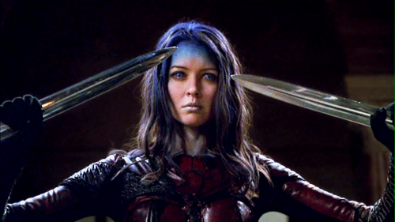

I am an elf most of the time. Except when I'm not. Occasionally taking the form of a tall, pointy-eared, tree-hugging humanoid being just isn't an option. This is a rare occurance, considering elves have become a staple of basically every digital fantasy role-playing game (RPG) released in the past twenty years. Even so, when I can't be an elf, I will turn into an orc or maybe even a human-like creature. However, I will never turn into a dwarf of anykind, because for some reason if I were to become a dwarf, I would consequently need to become male (I'm too proud of my femininity to do such a thing). I blame this phenomenon on Ghimli from Lord of the Rings, with his ridiculous suggestion that there are no dwarf women. The stupid game developers must have believed him.
My player gave me my name years ago from Illyria, a character from Joss Whedon's Angel spinoff television series of Buffy the Vampire Slayer. Illyria was a vengeful demon possessing the dead body of a woman named Fred, and this possession caused Fred's hair, forehead, and eyes to turn blue. Illyria gruesomely killed people and somehow became a sort of icon for feminist film scholars. My name is simply Illyria with the "I" changed to an "E." Why the change? I don't know. I needed to be somewhat original I guess. I have other names as well, like Alarielysia and Kireil, but I go by Ellyria most of the time I'm online.

Going back to elves and Lord of the Rings, I am also incredibly inspired by the character of Legolas. Although I have met him before as an elf character in LOTRO's Middle Earth a few times, I still find him a good model for my skills. Through archery I can decimate my enemies from a good distance, and I can connect with nature and sometimes gain strange magical benefits from doing so. And I can pass tights off as armor. All around, Legolas is a great person to model myself after.
I differ from my player on several points. For starters, I typically have black hair and I am extremely tall. I can handle weapons, I suddenly respawn after getting murdered (and have more lives than a cat), and I can cook like a boss. All I have to do is pick out ingredients, and just will a meal to cook itself. It's pretty great. It would almost need to be this way, though, otherwise I wouldn't have the time to go questing in numerous digital worlds.
When I'm not off fighting the undead or slaying dragons, I will sometimes visit my wife wherever I left her, go searching for crafting materials, or attempt to solve treasure maps. I'm not very good at that last one, though.
GAMES
Recent Appearances
In the past decade, I've made numerous appearances in digital and online fantasy worlds. I've made a list of the more recent appearances below, and with any that are sequels, such as Skyrim and Diablo III, it is safe to assume I appeared in earlier versions of the game. I've also appeared in many games that no longer exist, such as The Chronicles of Spellborn and I've also appeared in non-digital versions of games such as Dungeons & Dragons. I'm a pretty well-travelled elf.
My first video here shows me, as well as my small crew of Cassandra, Blackwall, and Varric, battling a dragon in Ferelden that is far beyond our abilities to slay. It's probably because none of them are badass elves like me, or that someone forgot to pack those fragile-looking bottles of red liquid to heal our sixth degree burns. But that is neither here nor there. The second video shows my player pitifully attempting to turn into me. In her dreams.
PHOTOS
STYLE
Not Just Defense Stats
Honestly, I added this section specifically so I would have enough sections to make ROYGBIV (or VIBGYOR in this case) work properly. I really hate the color yellow. It's atrocious. Especially when the only option for yellow fabric in Orlais or Ferelden seems to be a disgusting plaidweave. Anyway, I suppose I do have some stylistic preferences within games, and it doesn't necessarily have to do with stats all the time. After all, most digital realms allow me to enchant whatever to give it magical properties and higher stats anyway. In Ferelden, I crafted and some blue-velvet formal wear to have greater defense mechanisms than any of my iron or other metal armors.
As for fashion, I'm one of those characters who tends to forego helmets (or somehow make them invisible) so I have some breathing room as I'm hacking and slashing my way across extremely large swathes of country. I like light armor, and most of the time this is the only type of armor that agrees with my build. In order to move swiftly like my Legolas inspiration, I can't have too much weight holding me down. You know, except for the ten swords, twenty or so bottles of potions, various ingredients, suits of armor, and so on that I happen to carry around at any given time. Thank the maker for bottomless invisible pockets. And Lydia. She is sworn to carry my burdens. Becoming the Thane of Whiterun is one of the best things to ever happen to me.
I often craft my own armor, because what warrior doesn't also have time to learn a blacksmith's trade? When I make my own armor, I try to use something weird like glass, moonstone, or some other bizarre material that sounds particularly elf-y. I don't design anything, but I can occasionally tint my armor a different color. That's a nice touch.
SKILLS
Resume of an Elf Mercenary
Over the years I have become fairly proficient in numerous skill areas. Unfortunately, most of the time I need to relearn things when I move to new digital worlds. That's just the way it is, I suppose. Here are some of the things I am particularly good at:
Archery
Destruction Magic
Restoration Magic
Illusion Magic
One-Handed Weapons
Alchemy
Blacksmithing
Enchanting
Sneaking
Pickpocketing
ACHIEVEMENTS
Resume Continued
Also over the years I have accomplished many great deeds. I've finished hundreds upon hundreds of quests (although I may not remember what they were, exactly). Peasants, Jarls, and Empresses alike reward me with gifts that I tend to forget about an hour or so later when I loot a better item off a corpse. However, I do feel good helping people in these worlds sometimes.
Here are some of my accomplishments and positions I've held that come to mind:
Thane of Every Territory in Skyrim
Founder of the Inquisition
Slayed Alduin
Formed Allegiance with Paarthurnax
Survived Game of Thrones-esque Court Life in Orlais
Ran Thieves Guild in Riften
Destroyed, then Became Leader of, the Dark Brotherhood of Assassins